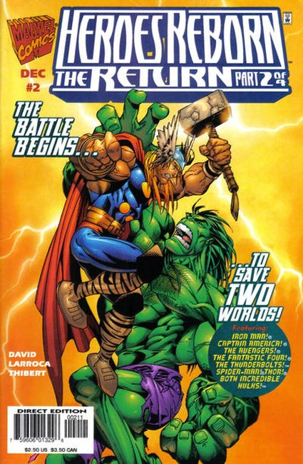
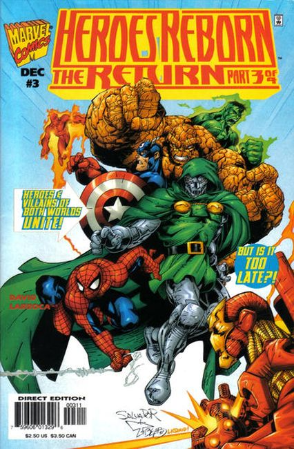
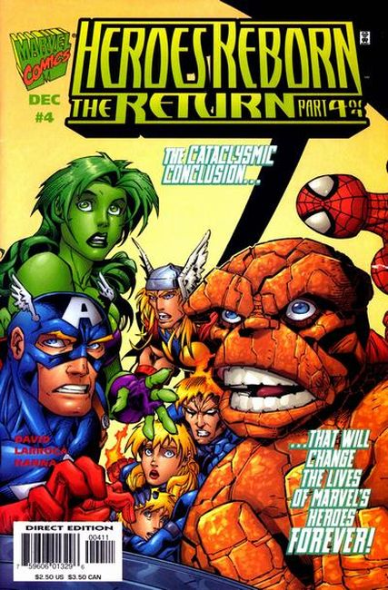

A mysterious woman named Ashema appears before Franklin Richards, calling herself a Celestial. She claims he's created another universe where his parents, Mr. Fantastic and the Invisible Woman--and all the other heroes who "died" because of Onslaught--exist. The problem is, Franklin doesn't know anything about it!
Can a child decide between two universes? What will happen to the universe that gets the short end of the metaphysical stick? And how will all of this lead to the upcoming return of the Fantastic Four, Iron Man, the Avengers and Captain America? The questions all of fandom are asking will be answered here!

"Second Coming" Part 2 of 4. In the Heroes Reborn Universe, Franklin's sudden arrival stuns the Fantastic Four! And only the Invisible Woman seems to know who he is! But Franklin quickly vanishes and other pressing problems take priority! Namely the rampaging Green Goliath and the planet's rising temperature! Meanwhile on Earth-616, several superheroes corner this world's radioactive Hulk in Central Park!

"Third Dimension" Part 3 of 4. Script by Peter David. Pencils by Salvador Larroca. Inks by Art Thibert, Bud LaRosa, Andrew Pepoy, and Mark Prudeaux. Cover by Salvador Larroca and Art Thibert. It's Hulk vs. Hulk in the Heroes Reborn Universe! And the Amazing Spider-Man is caught in the middle after being transported to Franklin's dying pocket universe! When the Avengers and Fantastic Four rush to his side, the wondrous wall-crawler is shocked to see them! Can the FF and Earth's Mightiest Heroes stop the Hulks and save the fading Earth? Not without help from Doctor Doom!

If the Atomic Knights--Reed Richards, Tony Stark, Bruce Banner and Victor von Doom--don't work together, a universe will die! Will the heroes on "this" side accept the fact that they must return to a world of which they have no memory? If they do, what memories will they retain of each reality? And who really has to go and who has to stay? Franklin tries to answer these questions with a glimpse of the past, but even with "godlike" powers, is this too much for a little boy to handle?!